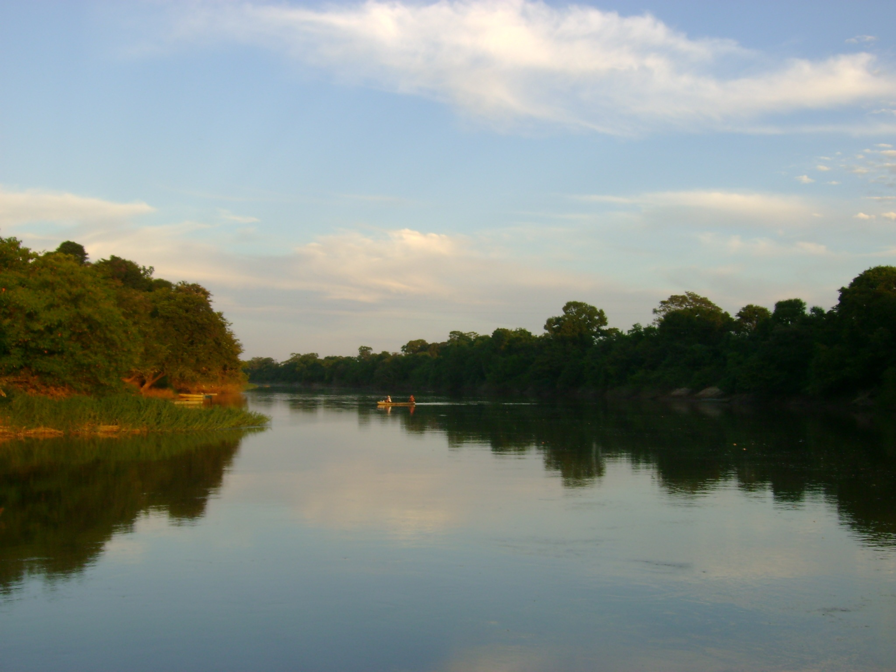
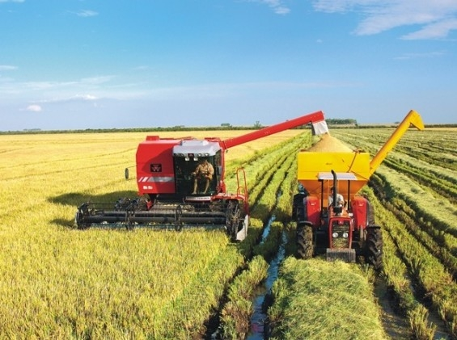

Principais características hidrográficas
A hidrografia do domínio das pradarias é caracterizada por uma drenagem perene e de grande fluxo, integrada majoritariamente à Bacia do Uruguai.
Ao longo dos leitos fluviais, formam-se matas ciliares, além de áreas de banhados e pequenos lagos que abrigam grande diversidade ecológica e auxiliam na manutenção da fauna local.

Principais Rios
Rio Uruguai: É o principal rio da região, servindo de coletor para grande parte dos cursos d'água locais e definindo a calha central da bacia.
Rio Ibicuí: Apresenta grande volume de água e forte papel na drenagem do centro-oeste gaúcho.
Rio Santa Maria: Outro afluente fundamental da Bacia do Uruguai que corta a região de campanha.

Influência na Sociedade
A hidrografia permitiu que a região se tornasse a maior produtora de arroz do Brasil.
Historicamente, as áreas de "várzea" (margens dos rios que inundam periodicamente) possuem solos muito férteis devido ao depósito de sedimentos. Isso garante pastagens naturais ricas e verdes o ano todo.
Os banhados (como o do Taim ou de São Donato) funcionam como esponjas naturais que evitam enchentes nas cidades e regulam o clima local.
